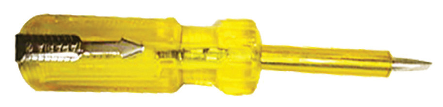

The live mains lead indicator, commonly called a tester, is made up of a form of a screwdriver with a hollow insulating handle containing a tiny neon discharge tube. One electrode of the neon tube is usually in contact with the metal probe of the screwdriver. The other is connected to the metal cap of the handle through a high-carbon resistor. When one inserts the metal probe into a live socket and touches a metal cap with a finger, current leaks to the earth through the body and the neon tube glows. Owing to the high resistance, this current is very low, so there is no risk of electric shock. Figure 2.53 shows a typical tester.

Most of the faults that occur in electrical appliances are simple and can be repaired easily. If, for example, an electric kettle fails to work, the first thing to check is whether there is power in the socket. This is done using the tester. The next step is to check the cable from the socket to the appliance. The plug should be opened to check the fuse if no fault is detected. Also, check each cable for continuity using a multimeter. If these components function correctly, the heating element is the next thing to check for faults. This can be checked for continuity or short circuits using a multimeter.
If the element is faulty, it must be replaced, as repair may not be possible. If the element is not faulty, then look for loose connections.
Connections should be made firm and/or cleaned of rust and other dirt.
Repairs in electrical appliances should be limited to connections to the power supply only. Beyond that, an electrical technician should be consulted. Care should be taken to avoid electric shocks during such repairs. Simple repairs on electrical connections in a domestic system can also be carried out. When a fuse blows, it is very likely to be due to a fault in an appliance. If the fault is detected and corrected, then the fuse can be replaced (or the circuit breaker switched ON).
Other faults occur due to wire cutting or joining, sockets getting dirty and switch breakage. All repairs should be done with the mains switched OFF. When replacing switches and sockets, the colour code should be followed strictly.